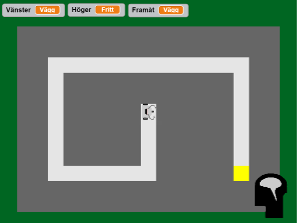
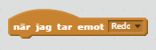
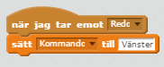

och sedan på
och sedan på 
Den här uppgiften är lite annorlunda. Du kommer att börja med ett färdigt program, och fylla i det som saknas – nämligen robotens hjärna!
Börja med att öppna Scratch-projektet Robothjärna och Remixa det, så att du får en egen version att experimentera med.
Klicka på och sedan på

Testa att köra igång programmet! Du kommer att se en liten robot som bara åker rakt fram tills den kör in i väggen. Det är hjärnan, nere till höger, som säger till den vad den ska göra för varje steg.
Du ska ändra i hjärnan, så att den hjälper roboten att ta sig genom labyrinten fram till det gula målet.
Du får bara ändra på sprajten "Hjärna"!
Öppna skriptet för sprajten "Hjärna".
Man styr roboten genom att sätta variabeln Kommando till "Vänster", "Höger" eller "Framåt" varje gång Händelsen "Redo" tas emot:

Till exempel, om du gör så här:

...så kommer roboten snurra åt vänster hela tiden. Testa! Men det kommer behövas lite mer än så för att lösa labyrinten...
Vi kan se hela labyrinten på vår skärm, men det kan inte roboten. Den har bara korta känselspröt som kan känna efter om det finns väggar runt omkring.
Känselspröten kan hjärnan läsa av med variablerna Framåt, Vänster och Höger. Om Framåt har fått värdet "Fritt", till exempel, vet hjärnan att det inte finns någon vägg framför roboten:
Använd "Om"-block (från Kontroll-fliken) och "="-block (från Operatorer) och se om du kan lösa labyrinten!
Det kan vara svårt att förstå hur roboten "tänker". Då kan det vara bra att kunna sakta ner den och undersöka den i din egen takt. Om du klickar en gång på "Skicka 'stega'"-blocket så kommer roboten att följa ditt program ett enda steg. På så sätt är det lätt att undersöka vad roboten kommer göra, steg för steg.

Tankebubblan som hjärnan visar upp varje steg går att ändra på. Man kan använda den för att visa hur roboten tänker, till exempel. Eller kan man ta bort den helt, om den stör.


Har du löst labyrinten? Bra! Nu kan vi testa din robothjärna på en svårare bana!
Klicka på sprajten "Labyrint" och fliken Klädslar. Välj "Nivå2" och starta om programmet!
Klarade roboten den nya labyrinten? Om inte, fundera på hur du kan ändra programmet så att den går att lösa!
Varje nivå är svårare än den förra. Klarar du att lösa alla? Försök göra så att en och samma hjärna kan lösa så många nivåer som möjligt!